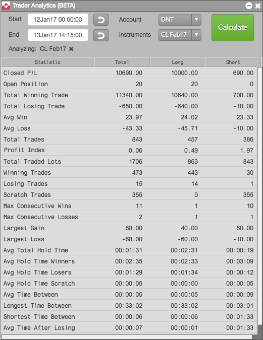

Trader Analytics gives a risk manager or trader the ability to analyze the current day’s trades and historical trade data from a comprehensive statistics report. By displaying individual trade and time analysis, Trader Analytics is the perfect tool for training new traders or reviewing current trader performance.
Using Trader Analytics, you can pinpoint the exact instrument, account, and time frame to analyze. You can gauge trader performance over a week or month or particular time of day, as well as analyze performance during specific market conditions like non-farm payroll or Fed announcements.

You can choose any combination of accounts and instruments to analyze, as well as analyze trader performance in the currency of your choice. Currency can be selected in the Trader Analytics widget settings.
The performance data calculated with Trader Analytics can be used to:
To open Trader Analytics, click Widgets on the workspace title bar and select the Trader Analytics widget.